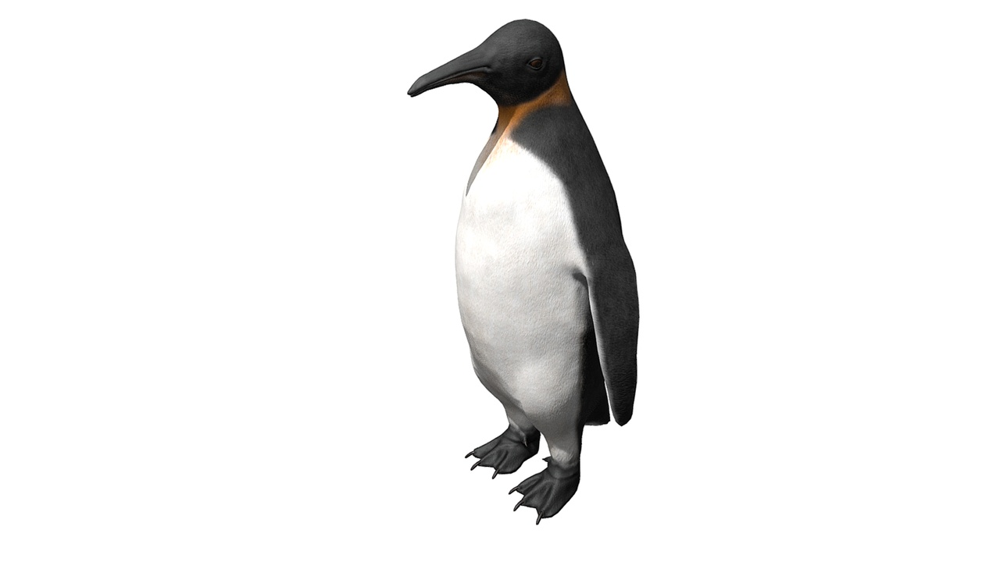
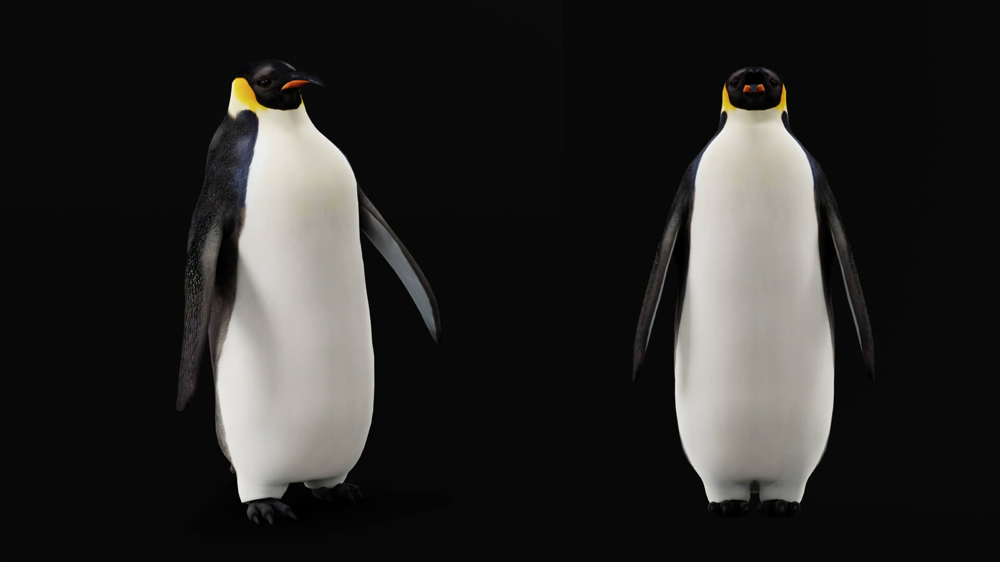
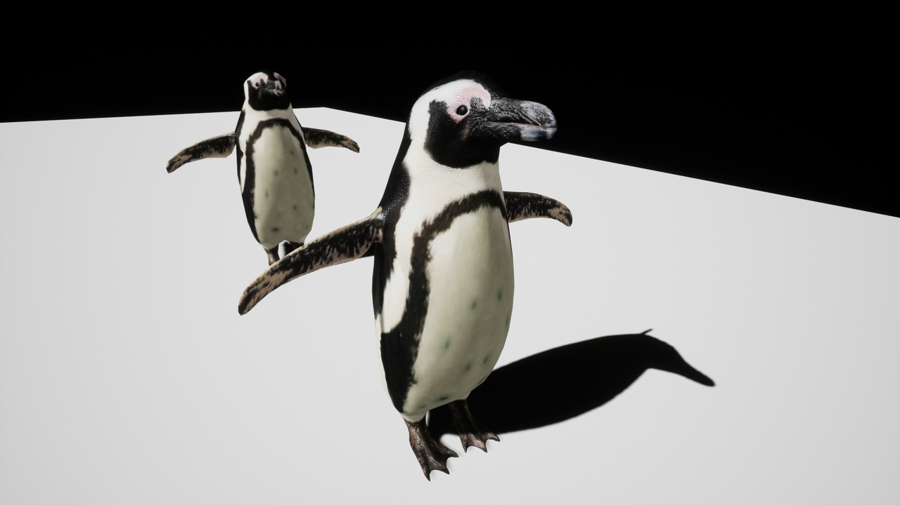
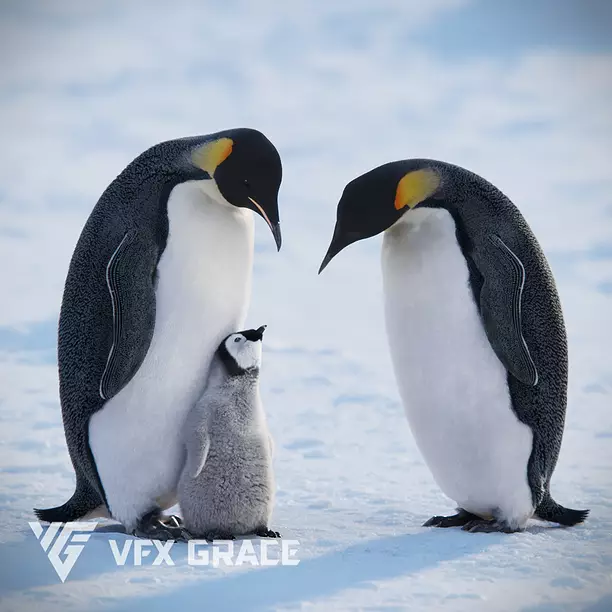

Tracefolio REPORTS & ISSUES
Tracefolio REPORTS & ISSUES리얼 펭귄 모델 4종 — 외형과 실제 이동 애니메이션 비교
완료Rifat은 이동 클립과 LOD가 장점이며, Nyilonely는 황제펭귄 외형 대안입니다. VFX Grace는 고품질 기준이지만 실시간 게임용 추가 작업이 필요합니다.
작업 결과
리얼한 펭귄 후보 4종의 판매자 설명과 공개 미리보기를 확인했습니다. 현재 게임의 모델은 교체하지 않았으며 구매·Unity 임포트·성능 검증은 실행하지 않았습니다.
변경 내용
적용 내용
| 후보 | 확인한 가격 | 제공 사양 | 판단·미확인 |
|---|---|---|---|
| RifatBilalov Penguin | Personal ₩43,980 / Professional ₩131,960 | 68개 애니메이션, walk·slip·swim·swim fast·swim up/down, IP/RM, FBX, 4 LOD 7,800~2,600 tris, 2K PBR | 게임 이동용 1순위. Unity 전용 패키지는 확인되지 않았습니다. 머티리얼·Generic 리그 매핑이 필요합니다. 전용 공중 다이빙 클립은 미확인입니다. |
| Nyilonelycompany Emperor Penguin | 정가 $50 / 조회 페이지 할인 $30 | Unity FBX, 9,916 tris, 13개 in-place 애니메이션, 4K PBR | 황제펭귄 외형 우선 대안. LOD·충돌체 없음. 13개 클립의 상세 이름과 미끄러짐·수영 포함 여부는 미확인입니다. |
| JUNNICHI SUKO Penguin | 시작 ₩33,710, 라이선스에 따라 ₩65,970까지 | 아델리·아프리카펭귄, 59본, 40개 동작+12개 in-place, 중·저해상도 모델 | Unreal 패키지입니다. Unity에서 리그·클립 확보 및 로직 재구성이 필요합니다. 황제펭귄 모델은 아닙니다. |
| VFX Grace Emperor Penguin — Blender | Individual $260 / Team $780 | Blender/Cycles, 털, 4K UDIM, 24,034 polygons, WALK·GLIDING 두 루프 | 외형 품질 기준. Unity용 털·텍스처·LOD 변환과 수영 애니메이션 추가가 필요합니다. 게임 적용 성능은 미확인입니다. |
가격은 2026-11-02 조회값이며 지역·세금·할인·라이선스에 따라 달라집니다. Fab 후보는 Standard 라이선스의 Personal/Professional 조건을 확인해야 합니다. Nyilonely는 판매자 Extended Use, VFX Grace는 매출 기준별 Individual/Team 라이선스입니다. Fab 라이선스.
Rifat — 이동 구현 우선 후보

Nyilonelycompany — 황제펭귄 외형 대안

JUNNICHI SUKO — 다른 종과 군집용 후보

VFX Grace — 외형 목표 참고

마지막 홍보 이미지의 배경·구성 전체나 새끼 모델까지 제공된다고 판단하지 않았습니다. 판매자는 장면 미포함을 명시합니다. Blender 상품과 Maya 상품의 가격·폴리곤 사양은 서로 다르므로 혼용하지 않았습니다.
검증
판매자 본문·가격 선택 UI·포맷·애니메이션 목록을 확인했습니다. 미리보기 4장을 원본 그대로 내려받아 시각 확인했습니다. 파일은 각각 48,917 / 47,790 / 86,228 / 25,882바이트로 모두 200KB 미만입니다. 이미지 제작·편집·재압축은 하지 않았습니다. 이번 작업은 리소스 조사이며 게임 화면 변경이 없으므로 실행 전후 화면은 생성하지 않았습니다.
남은 사항
구매 전 최종 클립 목록과 리그의 머리·날개 본을 확인해야 합니다. 모든 후보의 Unity 6000.0.83f1 실제 임포트·동작·GPU 성능은 미확인입니다. 리얼한 외형을 우선한다는 프로젝트 선호를 기록했습니다. 교훈 검토: 기존 검증 규칙과 중복되는 새 전역 규칙은 추가하지 않았습니다.
작업 시간
- 제안 시간: 15~25분 — 2026-11-02 19:16:23 KST 시작
- 실제로 완료된 시간: 조사 원고 확정: 2026-11-02 19:30:15 KST. 공개 배포 검증은 연결된 실행 메뉴얼에서 별도 기록합니다.
- XERJ: 미사용 — 리소스 조사로 코드·심볼 검색 불필요